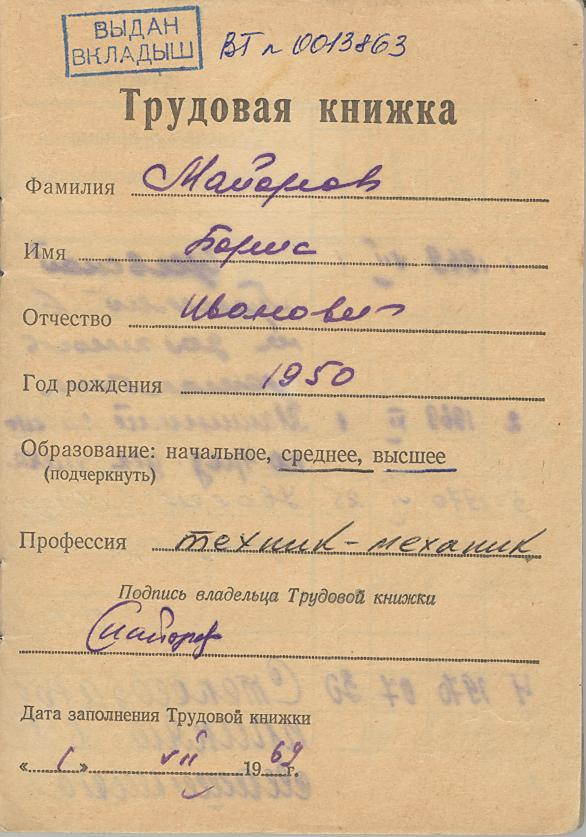
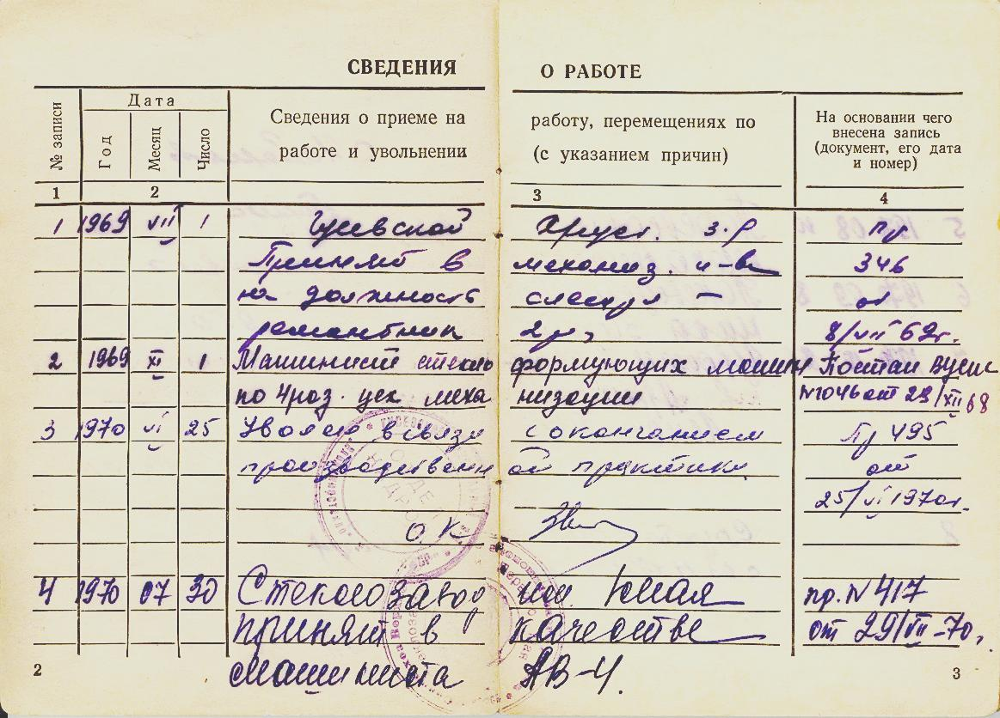
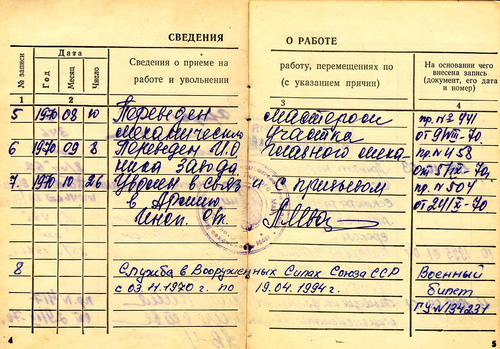
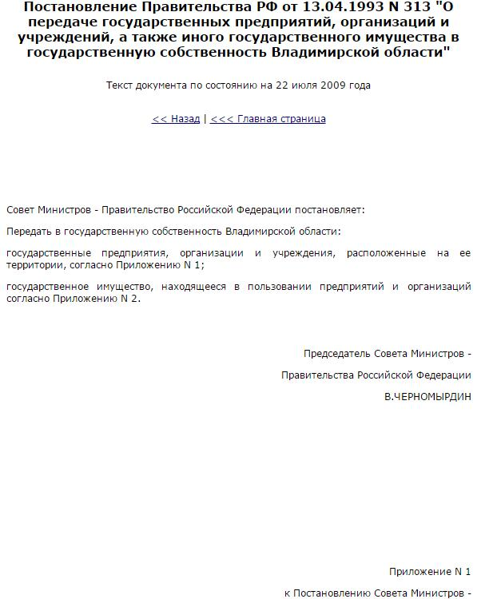
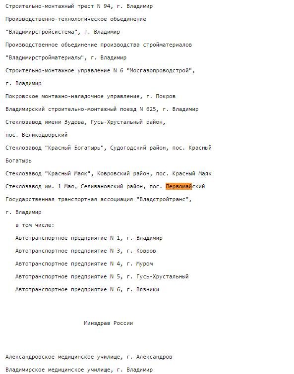
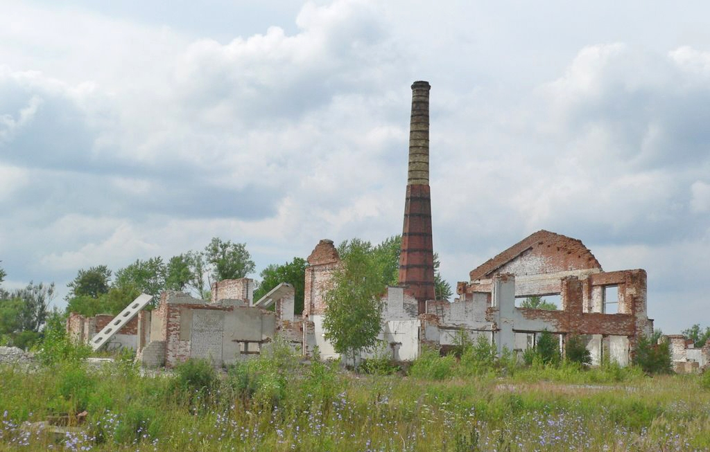
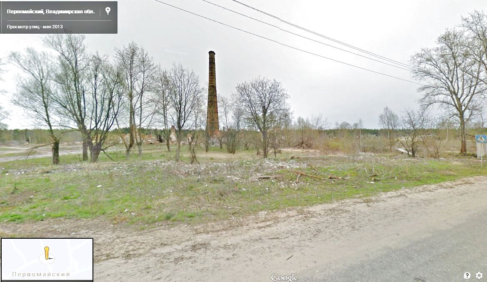
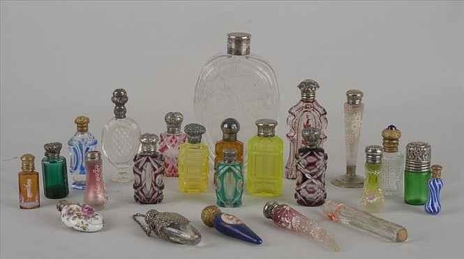
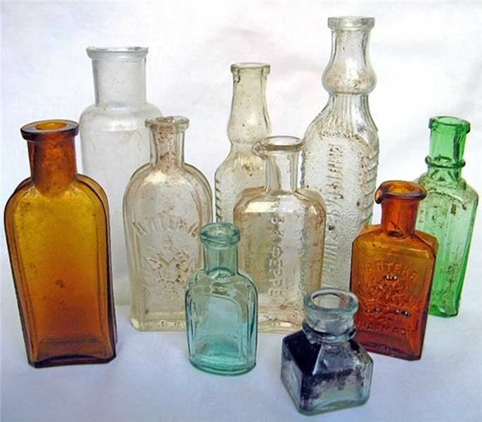
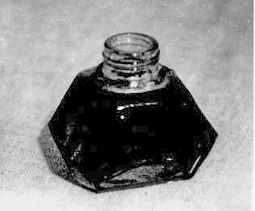

Завод имени 1 МаяНачало моей трудовой биографии 1970 год    После 1917 к 1985 году собственность русских купцов во Владимирской области была полностью поделена (взята под управление Администрацией СССР), однако к 1993 году после распада народного хозяйства СССР её передали в распоряжение местных властей и раздали на ваучеры. 1993 год   Однако люди не знали что делать с собственностью, полученной на ваучеры и, вероятно, в посёлке Первомайский население разобрало завод по дворам. И таких посёлков в России множество. Мои однокашники, начинавшие свою трудовую деятельность на таких заводах, как я, подтверждают - они в руинах или исчезли. Даже на знаменитом Гусевском Хрустальном заводе дымит однатруба - устаревшие технологии прожигают небольшие бюджетные деньги, полученные из федерального центра на развитие промысла. Чтобы чуть-чуть понять почему это происходит и кто виноват в этих сложных процессах России можно. Модель общественных процессов похожа на игру в шахматы с компьютером. В ходе игры становится понятным, что делает каждый ход немного лучше, чем вы и в результате вы всегдапроигрываете уже с первых ходов. Так, видимо, произошло и с диктатурой пролетариата в нашей стране. Да и с любыми вертикальными, жёсткими системами госуправления в современное время- все они сходят на нет. В социальном управлении развитых государств каждый ход главы государства сложнее шахматного, а ошибки намного дороже. Для этого в ходе своего исторического развития народы и придумали взаимный контроль. Он необходим в современных развитых государствах, где важность тех или иных глав ветвей власти записана народами в своих конституциях кровью. Вывод из партий с компьютером - глава любого сообщества, и Президент любого современного государства, всегда делает ошибки (человек слаб), но время на вероятные ошибки главы сообщества ограничивается определённым сроком. Народ оценивает эти ошибки и выбирает нового Президента. Жена -нового мужа... Более лучшего способа минимизации ошибок пока не придумано. 2007 год  2013 год  Скоро зарастёт лесом основанный в 1831 годуНово-Федоровский стеклозаводи посёлок при нём.  Промысел по выпуску флаконов различного назначения в 19 веке приносил прибыль и посёлок был вполне процветающим по меркам того крепостного времени.  Однако после 1917 года стекольная фабрика отошла народу и её переименовали в завод имени 1 Мая. Когда я прибыл на первое место моей самостоятельной трудовой деятельности в 1970 году завод уже был модернизирован наполовину (это можно отчётливо увидеть по заводской трубе, именно на ней были выполнены качественные ремонтные работы), были вновь установлены пневматические машины АВ-4 выдувающие флаконы для чернил по 3 копейки за штуку, фото которых с трудом, но можно найти в интернете.
 В это время всеобщей грамотности населения почти все тексты и документы были написаны или подписаны чернилами из этих флаконов. Однако кое у кого, даже в этом посёлке были шариковые ручки, которые начали производить и в СССР с 1965 года.На что рассчитывали модернизаторы этого завода понять трудно. Впрочем, в это финальное время расчётного коммунизма никто не рассуждал рационально. Во время моей учёбы в военной академии нефтедоллары тратили на ракеты, которые потом уничтожат по договорам о стратегических ракетах и ракетах средней дальности. Это всеобщее помутнение сознания после авантюр большевиков привело неудачно скроенный СССР к неудачному распаду. Об отсталости преподавателей и учебной базы техникума и говорить не буду. Они были в жёсткой упряжке существующего режима. Однако уже тогда, вероятно, они подписывались в ведомостях на зарплату шариковыми ручками, а нас готовили дробить доломит для варки стекла, из которого делались эти копеечные флаконы для чернил. Теперь уже по истечение многих лет я могу сказать, что социального энтузиазма у работников завода я тогда не замечал. Не заметил я преданности коммунизму и в военной академии. За все годы советской власти, взявшей курс на мировую революцию, или, как минимум, на мировую систему социализма, по сути был тренд на уничтожение собственности, инициативы, личности, устойчивости и сил народа, что в результате даже небольшая конкурентная отсталость России вылилась в развал самого государства и прекращение самого поселения человека в этих местах. Тогда я был молод и мне было интересно с утра до вечера проводить своё время на работе. Наверное, из-за этого я смог так много сделать за 100 дней. Да и быт был очень и очень убогий, но на него я не обращал особого внимания. Для варки стекла в печи на заводе в моё время в посёлок завозился керосин, газа там не было - нет теперь и керосина, хотя электричество в посёлок подведено ещё со времён административной индустриализации СССР. Интуитивно уже тогда я полагал, что нет перспектив ни у завода в Гусь-Хрустальном из которого я добровольно уехал в этот посёлок, ни в этом хозяйстве по выпуску флаконов для чернил на весь СССР. Видимо, сама судьба предлагала мне новый путь в жизни - армия. Но и там, как оказалось, в инициативных лицах не нуждались. Социальная игра большевиков с жизнью подходила к концу по всем направлениям. Конечно, у меня были и выходные, и танцы с девушками. Но где теперь подруги из юности моей??? В архиве осталось лишь фото Юлии 1970 года. Она вошла в мою заводскую жизнь с тропинки, по которой шла босыми аккуратными ножками, и словно разбула меня от моего карьерного угара механики, планов, изобретений и проектов. Я пошёл в клуб и после первого танца увёл её на прогулку, узнав, что она пришла пешком в посёлок от большой дороги, так как приехала из какого-то города, где собиралась учиться после школы. И когда через неделю я снова встретил её в клубе на танцах с стайке девочек, полных впечатлений от того, что главный механик завода ухаживает за их подругой, я понял - она закончила 8 классов и ей не более 16 лет. Это было подобно холодному душу и в то же время спасением. Мои ровесницы и девушки чуть старше 19-20 лет настойчиво соблазняли меня своими прелестями, а Юля давала мне защиту от них. Перед отъездом я подарил ей куклу и ничуть не задев её девичью честь отправился 1 ноября в армию. Надеюсь, что моё мимолётное появление в посёлке глубоко не ранило души моих прелестных знакомых. ............................................. Глядя на огромные богатства последних лет от нефти, газа и другого сырья идущих на укрепление национальной безопасности, невольно вспоминаю население таких посёлков центральной России. Их укрепление тоже национальная безопасность и региональный социальный капитал на переезд и обустройство в границах региона этим людям не помешал бы. И это было бы справедливо - у бывших советских людей, превращённых большевиками в послушное большинство, ни квартир, ни работы после приватизации не осталось. А ведь эти люди создали и оставили приватизаторам и нынешним политикам огромную страну. Многие поселения исчезли полностью, так как были из дерева. Даже память о них чуть жива в нашем народе. Надо сказать, что люди предыдущих эпох исчезают полностью вместе со своим бытом. Постепенно появляются новые люди со своей историей, которые уже никак не связаны с прошлыми временами. В цивилизованное время, в котором мы живём, так не должно быть. 2013 год |